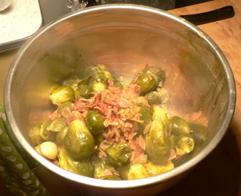
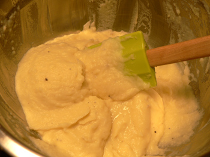
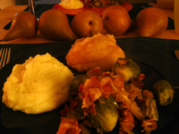

Leland’s puréed dinner
Fall at the Union Square Greenmarket is so romantic and cozy. The end of summer is nice, of course, with tomatoes and zucchini as far as the eye can see, but fall in the market—redolent of apples, cider, pumpkins, and pies—brings back strong childhood memories of hearty dinners in Pittsburgh and trips to Grandma’s cabin in Maryland. It just all feels so distinctly Northeastern (or Midwestern, depending on where you place Pittsburgh on your mental map). We never ate many tomatoes when I was growing up, and though I find summer produce delicious, foods that bring me back to Mom’s kitchen are what I seek out these days.
Look at this beautiful stalk of brussels sprouts I snagged this morning for $2.
I pictured them dripping with caramelized onions and crispy bacon, and such was their fate. I googled “brussels sprouts bacon” and quickly found Bill Telepan’s recipe for Brussels Sprouts with Bacon, which he claims has converted many sprout-haters (of which I am not one). There’s no way to screw up this recipe or to make it taste bad. Bacon, onions, and garlic coat everything they touch with savory, oily goodness. I let the sprouts simmer away for twenty minutes in the bacon mixture and an herb-spiked chicken broth, and they came out extremely tender and perfect. I removed them with a slotted spoon and then reduced the liquid to almost a syrup, which was sweet and heady.

Also on menu tonight was mashed Yukon Gold potatoes. I’ve spent so many hours mashing potatoes with a masher, worrying that I’m leaving lumps or overmashing them into rubbery nothingness. Why not just pass them through a food mill and be done with it?

This is nothing but three boiled potatoes, passed through the mill in less than two minutes, and mixed with butter and milk. You could eat them through a straw, and they taste fabulously potatoey. My food mill rules. Everything tastes better to me these days when it’s puréed. I feel as though I’ve been eating crispy, crusty, overly spiced food since the early nineties, and soft food that I can chew with my tongue is a relief with every spoonful. This is the season for simple, mouth-filling, soul-soothing dishes.
Overall, it was a lovely fall dinner. My second attempt at applesauce involved Honeycrisp, Macoun, Northern Spy, and Braeburn, all for about $1 a pound at the market. Some turned to mush faster than others, so I removed them from the pot as they were ready.

I also bought a few Bosc pears, pictured in the background. What would happen if I simmered those and passed them through the mill? Is pear sauce an option, or are there barriers I’m not aware of?
Comments
Hey Leland. I’m pretty sure I’ve had pear sauce before. I’d give it a try. I remember it being really good. Serve it with creme fraiche, maybe? Sounds delicious.
Hmm, I don’t know about pear sauce. Sounds weird, but who knows? Go for it! Your pureed potatoes look like they should be in a magazine. I attempted mashed potatoes this weekend, without a food mill, and mine look so lumpy and plain compared to your elegant puree!
The caterer I used to work for, the one I mentioned who was too angry to make her own pie crust, always put her mashed potatoes, and mashed sweet potatoes, through the food mill; in fact that was one of my jobs and a real arm-breaker it was, too, when pureeing large quantities.
Once, and only once, I put some pears in with the apples when making applesauce and they gave the sauce a grainy texture I found very unpleasant. But maybe if you were expecting it, so to speak, in an all-pear puree, it wouldn’t strike you that way. And I like Kathryn’s idea of topping it with creme fraiche.
Again with the lovely and evocative writing. You’re on a roll.
And your mashed potatoes look ridiculously delicious.
Luisa, I’m sure your mashed potatoes were beautiful and scrumptious.
Perhaps I’ll try passing a single pear through the mill to see if it’s worth making in larger quantities.
By the way, Saveur magazine has a small feature this month on applesauce, and they demonstrate the exact method that we use, Mommy. That’s the first other place I’ve seen it.
Ok, this looks too delicious — it isn’t fair! I’m so jealous — somehow the dinners I’ve had this week have involved frozen samosas, greek yogurt, Democratic soup, iffy pesto on stale bread, and midtown hummus delivery. This makes me want to become an invalid for a little while, but only if you’d promise to cook this for me. Yum!
Add a comment